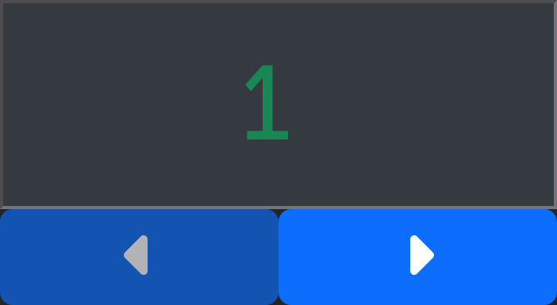
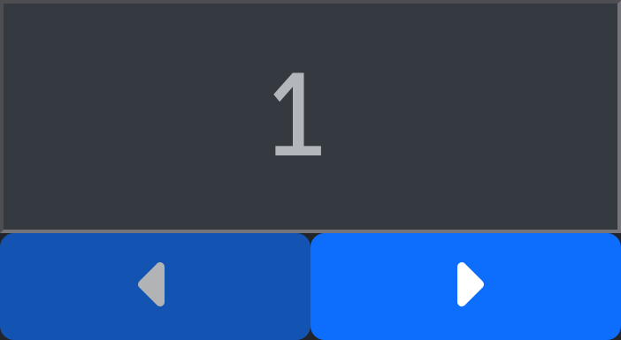

Channel Check
Channel Check mode allows you to set a single address to a defined level, moving through the universe sequentially.
Channel Check screen
Usage
Set the level you wish to set the checked address to using the Level fader.
Use  and  buttons to set the first address to check.
Press Start to begin transmitting.
The current address will be displayed in green while the program is transmitting:
Transmitting |
Not Transmitting |
|---|---|
 |
 |
Press Stop to stop transmitting.
Note
If this program was the only device transmitting sACN on the network, receivers will follow their programmed data loss behavior. This means that lights may not turn off immediately.
Config
Configuration menu
- Universe
sACN universe to broadcast on.
- Priority
sACN priority. Levels with higher priority will take precedence over levels with lower priority. If two sources are broadcasting with the same priority, the highest level will take precedence. The default priority on most sACN sources, including this program, is
100.- Use Per-Address-Priority
When enabled, the priority setting will be applied to only the address currently being checked. This mode is generally only compatible with sACN receivers designed by ETC (including dimmers and gateways), as it is a proprietary extension to the sACN standard. Receivers that do not understand per-address-priority will behave as if the priority setting is applied to the entire universe.
Effect
None
No effect will be applied to the output. The address will be set to the configured level and will return to zero when a different address is selected.
Blink
The address will flash at the selected rate.

Blink configuration menu
- Duration
The amount of time to wait before turning on/off.
- Level
The on level. The off level comes from the main level fader outside the effect configuration.
Tips
Channel checking a system in use
If you must check a system that is in use by others and you don’t want to disturb other levels, use the per-address-priority option and Blink effect:
Set the priority to
200.Enable per-address-priority.
Set the level to
20%(or some other low level).Enable the Blink effect. Set the blink level to
100%Press Start.
The address currently being checked will blink, while all others will remain at their previous level.